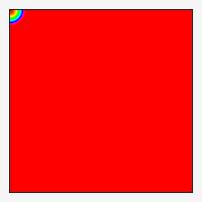

This command creates a dataset where each pixel value is proportional to the smallest distance of its counterpart in the input image to pixels having a particular 'isovalue'. The command operates primarily on single channel (grayscale) images and independently on each channel of a multi-spectral image.
In practice, the given image often arises from a logic command (-lt, -eq,...) consisting of a single channel populated with bi-value (0, 1) pixels. The logic command identifies pixels meeting some criterion and produces the immediate input image; the -distance command then establishes how far all other pixels are from the nearest pixels that meet the criterion.
Pixels in the original image (extreme left) with the isovalue zero presumably meet some criterion. They are also black (zero) in the resulting dataset (middle left), as no distance separates these from the isovalue. All other pixels in the dataset exhibit varying shades of gray, reflecting the varying distances of their counterparts to pixels with the given isovalue. The lightest pixels in the dataset correspond to counterparts that are positioned furthest from the isovalue.
It is not uncommon to further convert the dataset produced by -distance with a -map command, as was done with the near-left image. The Hue-Saturation-Value map used in this example identifies red with zero and violet to the highest value found in the dataset. Often, the color coding better reflects relationships than the unadorned gray scale produced by -distance.
The format of the command is:
-distance isovalue,_metric {0=chebyshev | 1=manhattan | 2=euclidean | 3=squared-euclidean }
It makes no sense to ask for distances to mauve, navy blue, pink or any other multiple-component color: -distance measures only to single channel intensity values. One may ask for distances to particular isovalues in multispectral images and obtain multispectral datasets indicating distances to the isovalue in each of the channels, with each channel treated as an independent grayscale image. If you are interested in the distances of all pixels to those colored some particular lime green, this will not give you what you want. Colors consist of multiple intensities; -distance will only measure to one such intensity.
Finding distances to particular colors can be done, but with two steps. Step one is a logic question: ask if a pixel has a particular color. Posing that question to every pixel in an image produces a new dataset of binary yes/no, one/zero values. This is a dataset upon which -distance can operate, the second step. A practical example follows.
Desktop publishing systems can produce 'out of gamut' warning images where all out of gamut pixels in some original are replaced with magenta, green, or some other highly saturated color, a kind that rarely appears in photographic images. Perhaps we might be interested in large out-of-gamut areas, but regard 'speckles' as acceptable. We don't wish to be bothered with images that may be out of gamut in a few pixels here and there. For our purposes, let any clump of pixels with a diameter of eight pixels or less be a 'speckle' or a line too thin to matter. The following G'MIC pipeline produces a modified warning image which, if it contains white (true) areas, corresponds to an original that really does require our attention.
$ gmic -input wizard_gamut-warn.png 'fn=@{0,n}'
-select_color 255,0,127 -distance[-1] 1
-ge[-1] 4 -if '{iM>0}' -output[-1] 'bad-${fn}' -endif
Here is a walkthrough of this command sequence:
1
A desktop publishing system reviewing images for printing on coated paper using four color process inks (CMYK) finds the RGB image of the wizard largely out of gamut, according to the output ICC profile furnished by the printing house. The particular subsystem making this discovery generates a new image, replacing all out-of-gamut colors with rgb(255,0,127), a reddish magenta. Other systems could use different indicator colors. The human in charge doesn't want to be bothered if only isolated pixels run out of gamut, but this example probably would concern him. The G'MIC pipeline which alerts him generates a new warning image, without speckles, but with areas coinciding with large out-of-gamut regions in the original. When the human sees the revised warning image, prefixed with 'bad-', he or she can inspect it, determine how bad the problem is, and decide upon some action. The first part of this pipeline entails basic setup housekeeping. Of note is the setting of a local variable, 'fn', to the file name of the first image on the stack, which will be used later in the pipeline if a warning image needs to be generated. |
|
2
Since -distance does not work with color directly, the G'MIC -select_color command can be harnessed to set out-of-gamut pixels to black and in-gamut colors to white, a dataset with which -distance can work. |
|
3
Given the binary file from the last step, the -distance command makes a single channel gray scale dataset where pixels that are equal to the isovalue — in-gamut pixels — are black. Out of gamut pixels are some measurable distance from these; the command sets the intensity value of these to the distance from the nearest in-gamut pixel. Out-of-gamut pixels in isolated 'speckles' would be very close to in-gamut pixels. They would have small values, be very dark and would not be of great concern to the human. On the other hand, out-of-gamut pixels in large masses will acquire very high distance values, exhibit a light gray and flag a condition which the human would like to know about. |
|
4
The -ge command — greater than or equal to some reference value — produces another binary dataset. Here, any pixel with a value greater than or equal to 4 is in a clump larger than a mere speckle. The combination of -distance and -ge filters out the isolated out-of-gamut speckles, but identifies the broad swatch of background and many areas in the wizard's robe as sizeable regions of out-of-gamut color. The control command -if ... -endif assesses the environmental value iM, which always contains the largest value observed in the last image on the stack. Since large areas of out-of-gamut pixels have been found, there are pixels in the dataset equal to one, setting the value of the aggregate variable, iM, to one. This triggers the writing of this image to a new file, which has the same name as the old file, but with the prefix 'bad-' added to the file name. Note the use of the variable fn set in step one: Later on, the human in charge will look at the files prefixed with 'bad-' to determine how bad the corresponding images are, and, with luck, be able to adjust them accordingly. |
A metric space is a set of points associated with a metric, a function that takes a pair of points from the set and returns the distance separating them. The metric space with which we are most familar, Euclidean space, uses the Pythagorean Formula as a metric, but other spaces exist which use different metrics. Of particular interest are those metrics that are cheap to compute, but which give rise to spaces sufficiently like a Euclidean one to serve most purposes. We should not be too alarmed if the distances in these spaces seem strange (or just plain wrong) to our Euclidean trained minds. For many purposes, all that we ask of a metric is to consistently distinguish near points from far points, and to do so as cheaply as possible. With this frame of mind, we are usually disposed to avoid the (expensive!) square root operation of the Pythagorean Formula.
The following series of images each illustrate one of the four metric spaces supported by the -distance command. The antecedent image is everywhere black except for the upper left hand pixel, which has been set to an intensity of one. We invoke the -distance command four times to measure distances to this isovalue, specifying different metrics each time.
To help visualize distances, we harness the -map command to encode distance with color. Here, red — rgb(255, 0, 0) — maps to a distance of zero and reddish violet to the maximum distance in the dataset. Pixels with similar colors are at a similar distance to the reference point under the given metric. There is no loss in generality if we simply regard these images as unit squares, sides equal to one, as that is a simple rescaling from whatever number of pixels these images are in this page.
We can succinctly generate the illustrations with the following G'MIC pipeline:
$ gmic 100,100,1,1 -set[-1] 1,0,0,0
-repeat 4 [0] -distance[-1] 1,'${>}'
-map[-1] 1 -normalize[-1] 0,255 -o[-1] dis_'${>}'.png
-rm[-1] -done -rm[0]
chebyshevThe chebyshev metric (_metric=0) defines the distance between any two points in the space as the largest of their differences along any spatial dimension. Construct a rectangle (a cuboid in three dimensions) on the line segment connecting the two points. In a space with a chebyshev metric, the separating distance is just the longest side of that geometric. the locus of points at a particular distance from the reference point form a square centered on the reference point. In this metric space, the length of the diagnonal is the same as the longest side. Indeed, in the square image on the left, the distance from the reference point to any point on either of the opposite sides is the same, which makes no sense to anyone grounded in the Euclidean metric. That oddity notwithstanding, the chebyshev metric furnishes a consistent reporting of distances between points — and it is exceedingly cheap to compute. |
|
manhattanThe manhattan metric (_metric=1) defines the distance between any two points as the sum of the absolutes of differences along each spatial dimension: We construct a rectangle (or cuboid) on the segment connecting the two points and add up the components along each dimension. The distance is exactly that of a taxi constrained to travel along the streets of a square grid such as in Manhattan, New York City (more or less).The locus of points at a particular distance from the reference form a diamond centered on the reference point. At the price of a little extra computation, at least with respect to the chebyshev metric, distances are fairly akin to those obtained with the Pythagorean Theorem. In the image at the left, diagonals of squares are longer than the sides, akin to what one would find with the Euclidean metric, though values differ. With the manhattan metric, the diagonal of the square image on the left is two, not the square root of two, for sides equal to one. |
|
euclideanThe euclidean metric (_metric=2, default) defines the distance between any two points using the Pythagorean Formula: It is the "ordinary" distance which would be obtained with a ruler measuring the line segment between a given pair of points. The locus of points at a particular distance from the reference form a circle centered on the reference point. This is the natural, "common-sense" distance which most of us associate with the space around us and is the default method of the distance command. It is computationally expensive compared to the other metrics, but renders the distance that one expects. |
|
|  |
squared-euclideanThe squared-euclidean metric (_metric=3) is simply the euclidean metric without the square root operation: Usually, the square root operation is the most expensive; its elimination gives rise to a metric space that behaves very much like a Euclidean one, differing only in that distances between points grow quadratically as points separate instead of linearly. Usefully, distances which sort in a particular order with a euclidean metric would sort to the same order with the squared-euclidean metric. This stems from the fact that the locus of points at a particular distance from the reference still forms a circle centered on the reference point, like the euclidean metric. |
Garry Osgood